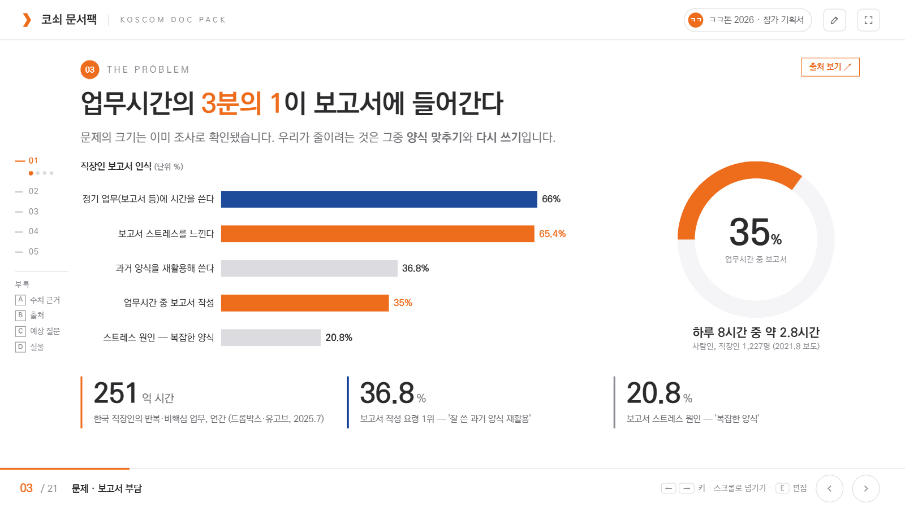
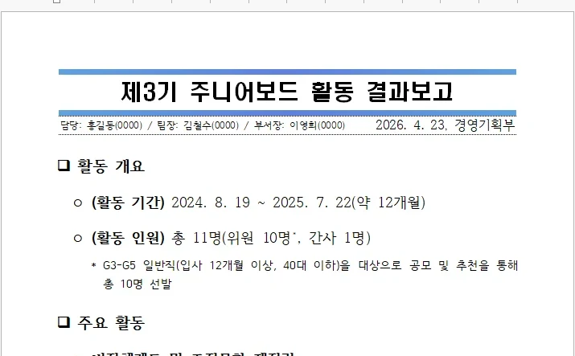

ㅋㅋ톤 2026 · 참가 기획서 요약
코쇠 문서팩
코스콤 맞춤형 PPT · 웹슬라이드 · 한글
문서 제작 패키지 솔루션
문서 제작 패키지 솔루션
PPTWEBSLIDE한글부서 문서팩
THE PROBLEM
업무시간의 3분의 1이 보고서에 들어간다
%
업무시간 중 보고서 작성 비중 · 사람인, 직장인 1,227명
보고서 스트레스65.4%
과거 양식 재활용36.8%
같은 내용을, 양식 때문에 또 쓴다
① 형식이 셋 — 한글·PPT·링크
② 부서마다 다른 규칙
③ 바뀌면 각자 다시
LANDSCAPE
'AI가 문서를 써 준다'는 더 이상 차별점이 아니다
MS Copilot
조직 브랜드 템플릿 연결
(2026.8~9)
한컴 × LG AI
양식 적용 초안 작성
(2026.5)
오픈소스 HWPX
서식 블록 약 87% 재현
(자체 발표)
사내 공모전
'보고서 자동 작성'이
상위권 단골
그래서 차별점은 두 가지
① 코스콤 양식의 정밀 재현 ② 부서 규칙의 일괄 관리
SOLUTION
엔진은 회사가 하나,
팩은 부서마다.
공통 엔진 3종(PPT · 웹슬라이드 · 한글) 위에
부서별 문서팩을 끼운다
부서별 문서팩을 끼운다
3 ENGINES
요청 하나, 라우터가 형식을 정한다
요청
메모 · 엑셀 · 회의록
부서 문서팩
문서 라우터
형식 결정 · 템플릿 선택

PPT 엔진 → .pptx
코스콤 양식 그대로, PowerPoint에서 고친다
43분 22장 첫 완성본 · 실측

WEBSLIDE 엔진 → .html
링크 하나로 열리는, 움직이는 발표자료
LIVE 이 기획서 자체가 결과물

한글 엔진 → .hwp
한글 프로그램 없이 표준 보고 양식 그대로
100% 평가 통과율 · 미사용 79%
ONE BLUEPRINT
설계도 한 장으로 세 형식을
{ "key_message": "엔진은 하나, 팩은 부서마다",
"sections": [ … 제목 · 항목 · 표 · 그림 … ],
"targets": { hwp, pptx, web } }
설계도한글PPT웹
제목□ 대제목장표 제목슬라이드 제목
항목ㅇ · - 단계글머리표카드 · 목록
표병합 셀 표네이티브 표표 · 차트
그림그림 + 캡션이미지움직이는 삽화
삽화는 한 번 그려 세 형식에서 다시 쓴다
DEPARTMENT PACK
부서 규칙을 팩 하나로 묶는다
영업 팩
v1.4 · 승인됨
양식
보고 유형
고정 콘텐츠
용어 사전
결재라인
삽화 태그
검수 규칙
한 번 등록하면, 부서원 전원이 같은 규칙으로
INHERIT & PROPAGATE
한 곳만 고치면, 전원에게
개인 설정
부서 팩
본부 팩
전사 공통 팩 🔒
팩 한 줄 수정 → 다음 문서부터 부서원 전원
버전 · 승인 기록 · 되돌리기 / 전사 CI·등급 표기는 잠금
HUMAN IN THE LOOP
AI는 제안하고, 사람이 승인한다
부서팩 스킬 자동 생성 ★
1 대표 문서 3~5건 + 한 줄 요청
2 AI가 부서팩 스킬을 만들고 검증 과제로 채점
3 검증 통과 → 관리자 등록 → 정식 반영
자동 검수 — 사람이 쓴 문서도
한글 3줄 이내 · 명사형 종결 · 날짜 형식
PPT · 웹 색 · 서체 · 넘침 · 겹침 · 출처
팩 규칙 고객사명 오기 · 대외비 문구
화면 설계 시안 · 본선 구현 범위
말하면, 세 형식이 한 번에
AI 초안 → 채팅 수정자동 검수 · 원클릭 수정


PPT · 웹 표→차트 · 한글 .hwp — 같은 설계도에서
화면 설계 시안 · 등록 · 승인 · AI
규칙은 서버와 Git이 지킨다


① 예시 문서 2건 → AI가
구성·고정 문구·규칙 추출
구성·고정 문구·규칙 추출
② 팀장 승인 = GitHub PR 댓글
→ 병합 · 버전 태그
→ 병합 · 버전 태그
③ 외부 AI(Bedrock 등)는 승인 기간만,
고객정보는 가려서 보낸다
고객정보는 가려서 보낸다
문서 권한(팀·부서 읽기/쓰기) · 대외비 잠금 · 감사 로그까지 — 본선에서 구현할 범위입니다 (화면은 가상 데이터 시안)
IMPACT
연 약 24,000시간을 돌려준다
500명문서 작성자 · 가정
×
8시간1인 월 문서 작성 · 가정
×
50%절감률 · 보수 가정
×
12개월1년
,000시간 / 년
실측(22장 최종본 2시간 20분 = 수작업 가정의 1/3)에서 낮춰 잡은 값 · 파일럿 30명으로 확정
CLOSING
내용은 사람이 쓰고,
코스콤다움은
코쇠 문서팩이 맞춘다.
공통 엔진 3종부서 문서팩자동 검수사내 AI 우선
코쇠 문서팩
문제 ①보고서는 업무시간의 1/3 — 그중 큰 몫이 양식 맞추기
문제 ②'AI 문서 작성'은 흔하다 — 차별점은 코스콤다움과 부서 관리
해법공통 엔진 3종 + 부서별 문서팩
엔진라우터가 형식을 고르고, 세 엔진이 코스콤 양식으로 만든다
설계도한 번 쓰면 PPT · 웹 · 한글 세 형식으로
문서팩부서 규칙을 한 번 등록하면 전원에게
상속전사 → 본부 → 부서 → 개인, 한 곳만 고치면 일괄 반영
스킬대표 문서로 부서팩 스킬 자동 생성 — 검증 통과 후 관리자가 등록
시안AI 초안 → 채팅 수정 → 한글·PPT·웹을 한 번에
운영등록은 PR, 승인은 PR 댓글 — 외부 AI는 승인제
효과연 약 24,000시간 — 가정은 파일럿에서 실측으로 확정